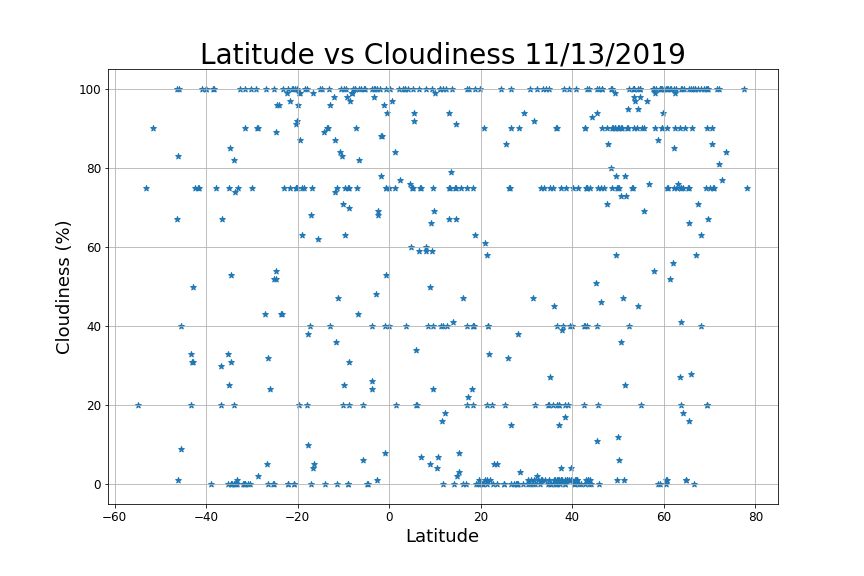
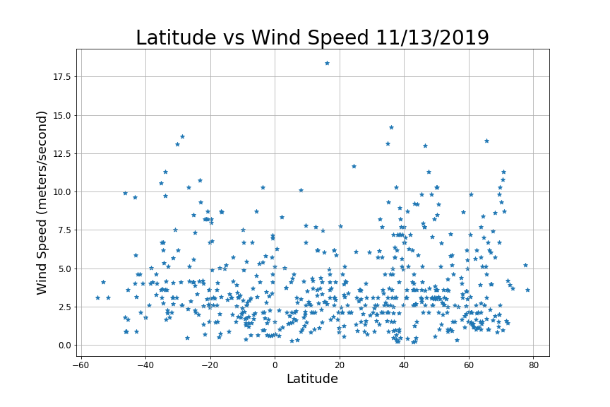

Welcome to "Weather through the Latitudes". The data in this project was produced in a Jupyter Notebook. Cities were randomly selected by randomly selecting coordinates through CityPy. Then, using OpenWeather API, the daily weather data was selected for each city. Data for Max Temperature, Humidity, Cloudiness and Wind Speed were recorded and graphed on a scatter plot. The visualizations are presented on this site.

|

|
|  |  |